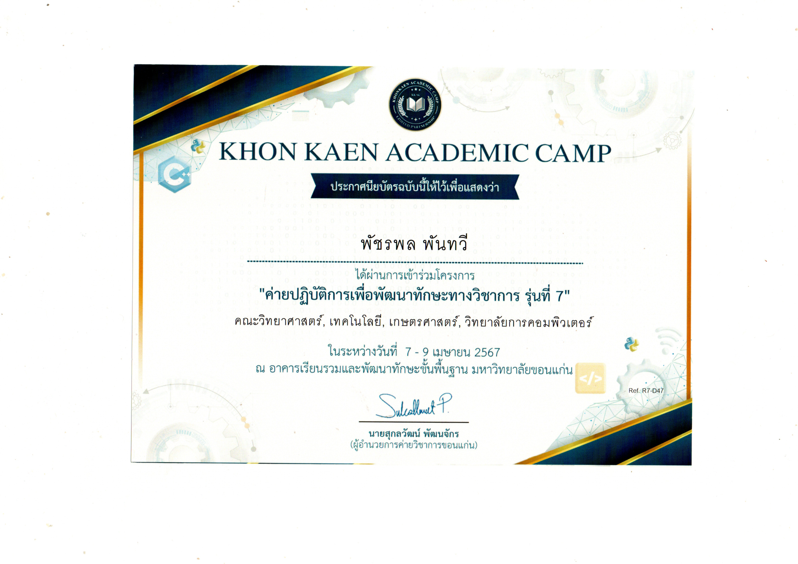

My name is First
Hello, my name is Patcharapol Phantawee. I am a 12th-grade student studying in the English-Chinese program at Roi Et Wittayalai School. I am interested in pursuing a degree in Computer Science at the Faculty of Computer Science. My passion for computer languages began when I was in elementary school, watching YouTubers who created programming content. This sparked my fascination, but due to my limited English proficiency at the time, I chose to enroll in the English-Chinese program in high school. Although this temporarily diverted me from programming, I continued to practice and develop my skills. Studying English and Chinese while simultaneously learning programming has been a significant challenge for me. The Chinese program requires memorizing extensive vocabulary, while the English program demands practice in speaking, reading, and writing. Despite my limited programming experience, I am highly motivated to learn and confident that Khon Kaen University will help me reach my full potential. The Faculty of Computer Science at Khon Kaen University is renowned in northeastern Thailand for its modern curriculum and ability to develop talented individuals who meet the demands of the job market. The faculty collaborates with leading technology companies both domestically and internationally, providing students with opportunities to intern at prestigious organizations and gain hands-on experience. Moreover, the faculty boasts highly qualified professors specializing in computer science and information technology, many of whom have international experience and are globally recognized researchers. I firmly believe that my knowledge, abilities, and dedication will greatly benefit Khon Kaen University. I will adhere to professional ethics, continuously learn new things, and excel at solving problems using logical and creative thinking. I possess strong communication skills, teamwork abilities, and leadership qualities. My ultimate goal in life is to become a programmer.
Mini Camp
I participated in this activity on April 9, 2024. The entire activity took 3 days to complete. On the 3rd day, we were allowed to choose our own learning track. I therefore chose the one related to the Faculty of Computer Science, majoring in Artificial Intelligence (ปัญญาประดิษฐ์).

- 